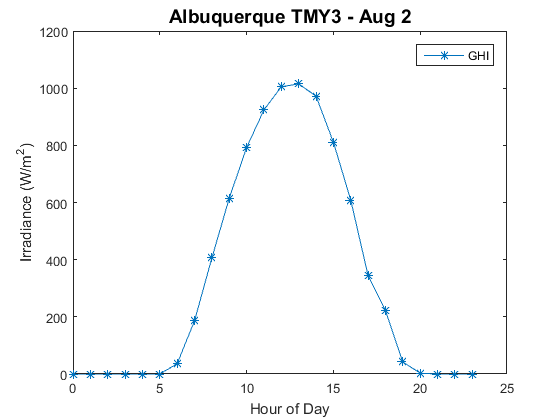
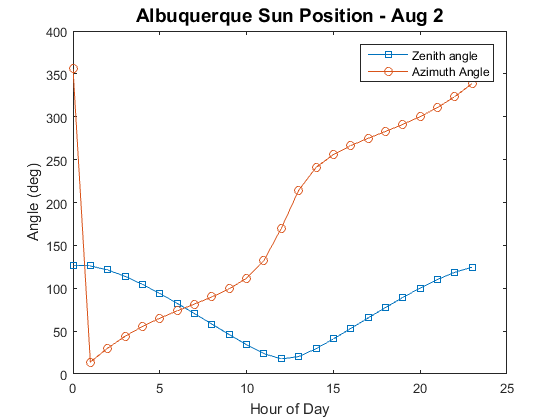
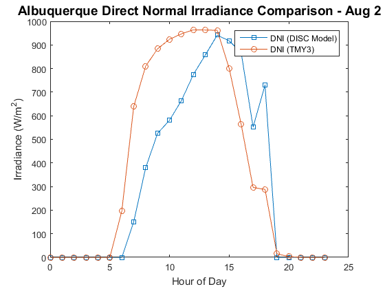
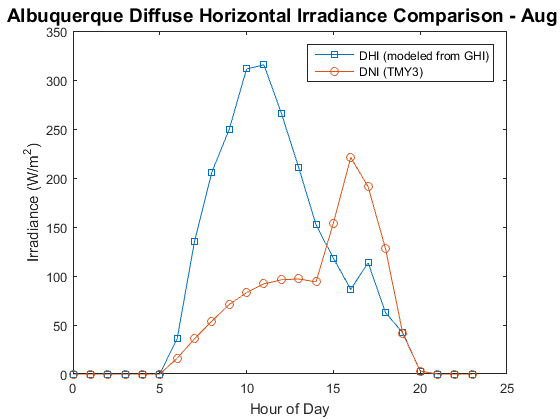

PVL_TestScript2
Example script to demonstrate the modeling of a PV system using only global horizontal irradiance data.
This script demonstrates how to use the PV_LIB Toolbox to estimate the standard irradiance inputs given only global horizontal irradiance. The input data used in this example is read in from a Typical Meteorological Year 3 (TMY3) formatted file that contains one year of hourly-averaged data for Albuquerque, NM. While the DNI and DHI data from this TMY3 file are not used in this analysis for calculating DNI or DHI, the TMY3 data values are used to evaluate the results.
Contents
PV_LIB Functions used in this example
clear all; %clear memory before running script close all; %close all files and figure
Step 1: Irradiance and Weather
Read in weather data from Albuquerque TMY3 file: 723650TY.csv. This step uses the PV_LIB function pvl_readtmy3 to read in data from this TMY3 formatted file.
TMYData = pvl_readtmy3('723650TY.csv');
1.1 Define Time and Irradiance Variabiles
- Create time structure (Time) by using the PV_LIB function pvl_maketimestruct.
- Define variables for direct normal irradiance (DNI), diffuse horizontal irradiance (DHI), and global horizontal irradiance (GHI)
TimeMatlab = TMYData.DateNumber; Time = pvl_maketimestruct(TimeMatlab, ones(size(TimeMatlab))*TMYData.SiteTimeZone); dayofyear = pvl_date2doy(Time.year, Time.month, Time.day); DNI = TMYData.DNI; % Read in for comparison with results DHI = TMYData.DHI; % Read in for comparison with results GHI = TMYData.GHI; %
Let's examine GHI irradiance for a sample day (August 2)
figure tfilter = and(Time.month == 8,Time.day == 2); plot(Time.hour(tfilter),GHI(tfilter),'-*') legend('GHI') xlabel('Hour of Day') ylabel('Irradiance (W/m^2)') title('Albuquerque TMY3 - Aug 2','FontSize',14)
This plot shows that this day was generally clear, with possible minor clouds in the afternoon.
1.2 Define the Site Location
Create a Location structure using the PV_LIB function pvl_makelocationstruct.
Location = pvl_makelocationstruct(TMYData.SiteLatitude,TMYData.SiteLongitude,TMYData.SiteElevation) %Altitude is optional
Location =
latitude: 35.0400
longitude: -106.6200
altitude: 1619
1.3 Calculate Sun Position
Calculate sun position using PV_LIB function pvl_ephemeris. If Pressure and Temperature are specifiec they must be in units of Pa and deg C, respectively.
PresPa = TMYData.Pressure*100; %Convert pressure from mbar to Pa
[SunAz, SunEl, AppSunEl, SolarTime] = pvl_ephemeris(Time,Location,PresPa,TMYData.DryBulb);
Let's examine a plot of sun position for our site on August 2
figure tfilter = and(Time.month == 8,Time.day == 2); plot(Time.hour(tfilter),90-SunEl(tfilter),'-s') hold all plot(Time.hour(tfilter),SunAz(tfilter),'-o') legend('Zenith angle','Azimuth Angle') xlabel('Hour of Day') ylabel('Angle (deg)') title('Albuquerque Sun Position - Aug 2','FontSize',14)
1.4 Estimate DNI using the DISC Model
This step estimates the direct normal irradiance from the global horizontal irradiance using the PV_LIB function pvl_disc. Note that this function takes as input GHI and the solar zenith angle (actual rather than aparent)
DNI_model = pvl_disc(GHI,90-SunEl, dayofyear, PresPa);
Let's examine a plot comparing DNI estimated with the DISC model and that from the TMY3 dataset our site on August 2
figure tfilter = and(Time.month == 8,Time.day == 2); plot(Time.hour(tfilter),DNI_model(tfilter),'-s') hold all plot(Time.hour(tfilter),DNI(tfilter),'-o') legend('DNI (DISC Model)','DNI (TMY3)') xlabel('Hour of Day') ylabel('Irradiance (W/m^2)') title('Albuquerque Direct Normal Irradiance Comparison - Aug 2','FontSize',14)
1.6 Calculate DHI_model from DNI_model, GHI, and Zenith Angle
DHI_model = GHI - cosd(90-SunEl).*DNI_model;
Let's examine a plot comparing modeled DHI to DHI from the TMY3 dataset our site on August 2
figure tfilter = and(Time.month == 8,Time.day == 2); plot(Time.hour(tfilter),DHI_model(tfilter),'-s') hold all plot(Time.hour(tfilter),DHI(tfilter),'-o') legend('DHI (modeled from GHI)','DNI (TMY3)') xlabel('Hour of Day') ylabel('Irradiance (W/m^2)') title('Albuquerque Diffuse Horizontal Irradiance Comparison - Aug 2','FontSize',14)
Next Steps
At this point in the calculation we have demonstrated how to use PV_LIB function to estimate the standard irradiance inputs (DNI and DHI) starting with just GHI as an input. Refer to PVL_TestScript1.m for an example of how to use these standard irradiance inputs in a PV modeling analysis using the Sandia PV Performance Model.
Copyright 2014 Sandia National Laboratories